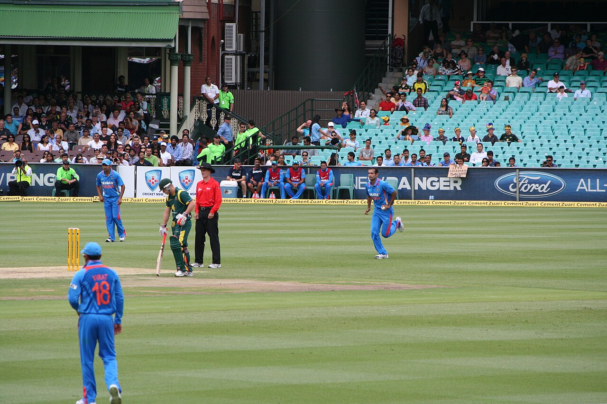

From a Left-Arm Legacy to a Sparse ODI Attack: Why India Has Struggled to Recreate Its Pace Trio
India once had three left-arm quicks who formed a sustained part of its ODI attack. More than a decade later, the search for that combination continues.

Source: Wikimedia Commons
There was a period when left-arm pace was a regular feature of India’s ODI attack. Zaheer Khan, Irfan Pathan and Ashish Nehra overlapped across the 2000s and early 2010s, giving India three established options from the same side of the bowling spectrum.
Their importance was not just in the wickets they took, but in how consistently India could turn to a proven left-arm option during an ODI cycle.
India’s left-arm pacers took 18 ODI wickets in 2000, rising to 52 in 2002 and peaking at 79 in both 2004 and 2005. The tally remained high through the decade, reaching 75 in 2007, 54 in 2009 and 42 in 2011.
After 2012, the pattern changed sharply. The tally fell from 28 wickets in 2012 to eight in 2013 and remained mostly in single digits thereafter. In 2022, India’s left-arm pacers took no ODI wickets. There were recoveries to 11 in 2023, two in 2024, 10 in 2025 and eight in 2026, but none matched the sustained output of the earlier period.
Much of that earlier production came from three bowlers. Zaheer Khan took 282 ODI wickets, Irfan Pathan 173 and Ashish Nehra 157, giving the trio 612 ODI wickets between them.
Zaheer became one of India’s leading ODI bowlers and took 21 wickets at the 2011 World Cup, finishing joint-highest wicket-taker as India won the tournament. Nehra produced one of India’s memorable World Cup spells with 6/23 against England in 2003. Pathan, meanwhile, became a regular ODI option during the middle of the decade, combining left-arm pace with lower-order batting.
What made the period unusual was the overlap. India could go through different stages of an ODI cycle with multiple established left-arm options available.
The post-2012 period has been different. Barinder Sran, Jaydev Unadkat and Khaleel Ahmed all received ODI opportunities, while Arshdeep Singh has emerged as the most prominent recent option. The challenge has been turning individual opportunities into the kind of sustained ODI presence the earlier trio provided.
Where do India's left-arm quicks stand?
The comparison with India’s right-arm pace history puts that in perspective. Ajit Agarkar finished with 288 ODI wickets, while Mohammed Shami took 206. Bhuvneshwar Kumar, Ishant Sharma and Umesh Yadav also crossed 100 ODI wickets.
Shami provides an especially useful generational comparison with Zaheer. At the 2023 World Cup, Shami overtook Zaheer and Javagal Srinath to become India’s leading World Cup wicket-taker. He finished that tournament with 24 wickets in seven matches, including three five-wicket hauls and 7/57 against New Zealand in the semi-final.
The comparison is not about declaring one bowling style superior. It shows how India has repeatedly found right-arm quicks capable of establishing themselves over extended ODI careers, while comparable continuity from the left has been harder to sustain.
Zaheer, Pathan and Nehra recorded ODI bowling averages of 29.43, 29.72 and 31.72, with strike rates of 35.8, 33.8 and 36.6, respectively. Their significance lies not simply in those individual figures, but in having three established left-arm quicks operating across overlapping parts of the same ODI generation.
That difference is visible in India’s broader ODI bowling profile. Since 2000, right-arm pacers have taken 1,958 ODI wickets, compared with 732 by left-arm pacers. Among spinners, the gap is considerably smaller, with right-arm spinners taking 1,099 wickets against 729 for left-arm spinners.
The graphic has three scatter plots showing where Deepti Sharma stands compared to other bowlers in Tests, ODIs and T20Is. All players are shown using yellow dots while Deepti Sharma is shown using a red dot.
Left-arm pace has therefore never been India’s dominant ODI route. What was unusual about the Zaheer-Pathan-Nehra period was the depth on that side of the attack.
How India's left-arm quicks compare among others in the world?
The international comparison provides further context. Zaheer, Pathan and Nehra can be placed alongside prominent ODI left-arm pacers such as Wasim Akram, Chaminda Vaas, Mitchell Johnson, Mitchell Starc and Trent Boult. Their careers span different eras and conditions, so the comparison is not a direct measure of one generation against another. It instead shows the recurring impact left-arm pace has had on ODI cricket globally.
For India, the story is ultimately about succession.
The country has continued to produce fast bowlers, and individual right-arm pacers have gone on to establish themselves and break records. What has proved harder is reproducing the left-arm depth of the 2000s, when Zaheer, Pathan and Nehra gave India multiple established options over a prolonged ODI period.
The annual figures capture the change: 79 left-arm pace wickets at the peak of the earlier era, followed by mostly single-digit returns after 2012 and none in 2022.
India has continued to find left-arm quicks. What it has not yet found is another ODI generation with three established names operating together long enough to make left-arm pace a consistent feature of the attack.